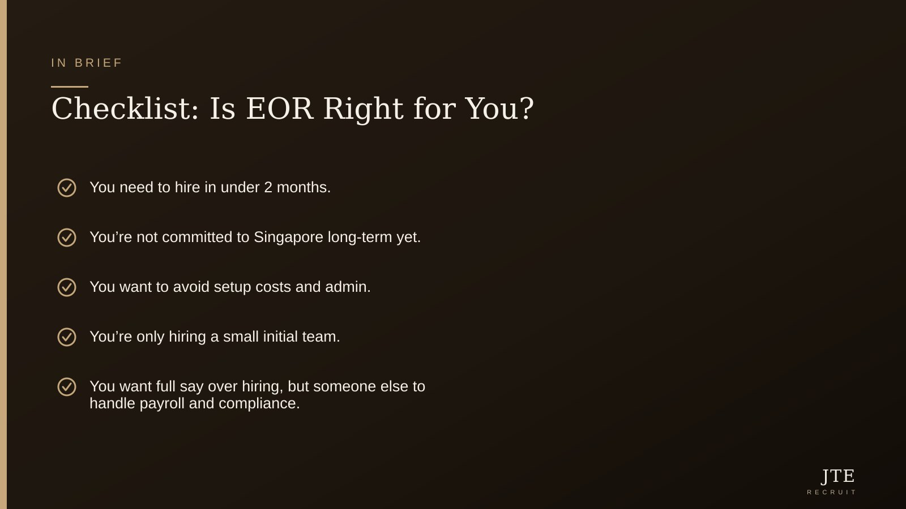

You want to move fast in Singapore. But you’re not ready for all the pain and paperwork that comes with setting up a company here. That’s the story I hear from founders, COOs, and HR in global businesses almost every week.
Good news—there’s a way to hire, pay, and manage staff in Singapore without jumping through years’ worth of local hoops. It’s called employer of record (EOR). Here’s how the best teams use it for tech, manufacturing, and support. Plus, use my checklist to see if it’s right for you. Oh, and there’s a trick to get your first year of EOR payroll free if you’re quick—details inside.
The Real Problem: You Need People Now, Not Next Year
Opening a legal entity in Singapore can take months, not weeks. And it locks you into costs—local directors, annual filings, paid-up capital, the lot. Global hiring plans rarely stop just because admin is slow.
That’s where EOR comes in. You don’t need a local company. You don’t even need a team on the ground. You just need to find, hire, and pay talent—keeping compliant, fast, and simple. I’ve seen tech firms win deals here before even flying in. I’ve seen manufacturers test projects by hiring 2–3 staff for a few months. All this, no entity needed.

So, What Is Employer of Record (EOR)?
EOR is a service. They become the official legal employer for your Singapore staff. You pick and manage the talent—they handle the paperwork, payroll, and HR compliance.
It’s still your team. You decide what they work on, and you set the KPIs. But the EOR deals with MOM, tax, and all the headache stuff that derails most expansion plans.
If you’re thinking, isn’t this too good to be true? Not really. EORs have been around for years. No regulatory magic, just a proven way to bridge between global HQ and local teams.
Who Actually Uses EOR in Singapore?
I’ve seen three types of companies get the most value: tech firms landing their first deal or project here, manufacturers piloting or running projects before a big rollout, and overseas support teams trialling the Singapore market.
For tech, speed wins. Especially now, when the latest ManpowerGroup Singapore Q4 2026 report says hiring in Tech & IT is up (+18%) yet companies are more selective than ever—EOR means you don’t lose six months on entity paperwork. (Confirm current figures with MOM / the relevant authority.)
For manufacturing and project work, it’s about flexibility. You spin up or down by project. When total employment in construction and manufacturing just shot up by 27,700 in Q3 2026 (confirm current figures with MOM / the relevant authority), you don’t want to be stuck paying for a dormant shell company if business changes next year.
Support functions—think finance, compliance, admin—they’re needed, but building full corporate infrastructure first? Rarely worth the commitment for a 1–2 person team early on.
How Does Payroll and Compliance Work?
Here’s where even veteran hiring managers get nervous—Singapore is strict on payroll and work pass rules. Mess it up, pay the fine.
EORs are licensed to handle everything: salary, CPF, levies, leave… even work pass sponsorship. The Ministry of Manpower keeps a close eye on work pass declarations—September 2026’s EA alert is only the latest reminder. You want a partner who gets local compliance (and lives and dies by it).
Bonus: if you want to try EOR in Singapore, we actually run payroll free for the first year. See if it works for you before you invest heavy. More at /free-payroll-singapore/.
Speed, Simplicity… and a Bit Less Risk
EOR isn’t for every situation. But when your biggest risk is wasting time and budget just to set up shop—with no guarantee the team will succeed—it makes sense to stay nimble.
There are companies running their Singapore teams on EOR for 6–24 months while they test the market, win clients, build a case for a permanent entity. You control your runway. If things don’t pan out, you can exit cleanly, with no corporate mess left behind.
If you’re not sure about EOR, see my checklist below—it’s what I use with clients making this call.
EOR vs Setting Up a Company: My Quick Checklist
Here’s how I help leaders decide if EOR is right (use these like a scorecard):
- Need to hire in Singapore within 1–2 months? EOR is your fastest bet.
- Unsure if your project or market is long-term? EOR keeps your options open.
- Want to avoid up-front company setup costs and legal lock-in? EOR wins.
- Only hiring a handful of employees—say, 1 to 10 for now? EOR is built for this stage.
- Need full control over work, KPIs, and who you hire… but want someone else to sort the admin and payroll? That’s EOR.
If you ticked two or more, EOR is at least worth a chat. And with free payroll for the first year, even better—check it out at /free-payroll-singapore/.
The takeaway An EOR lets you hire, pay, and manage Singapore staff before going all-in—no entity required.
Frequently asked questions
Can I switch from EOR to my own entity later?
Yes—most EOR providers can help you transfer staff once your company is set up. It’s smoother if you plan for it from the start.
How quickly can I hire through EOR in Singapore?
Often 1–4 weeks from offer to onboarding, depending on paperwork and work pass type. Much faster than setting up a company from scratch.
Who is the legal employer for MOM and tax?
The EOR is the legal employer on paper. But you manage the team’s day-to-day work.
Do I lose control over hiring or firing decisions?
No—you keep control over who you hire, KPIs, and letting people go. The EOR handles compliance and admin.
How does EOR payroll really work?
You approve hours, bonuses, and expenses. The EOR calculates salary, deducts CPF/levies, submits to MOM—pays your staff on time, every time.
Are there grants or subsidies for EOR services?
Some new tech and HR grants exist, but they’re not set up for EOR alone. Always confirm current figures and offers with MOM or relevant authorities.